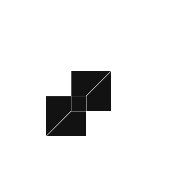

Disclaimer: This is a paradoxical commentary on my views on certain subject matters. Read at your own risk!
I've always been haunted by this question... it's not really a question, it's a sense of doubt. A doubt that almost nobody has the answer to, or atleast not a satisfying one. And this doubt has haunted me ever since I began to think on my own terms. Sure... you can go ahead and call me a lunatic... or label me as one of those crazy conspiracy theorists.. but I swear I'm not either of them. I pose a genuine question ... something that breaks many people's belief systems, the very bedrock of their comfort bubble is at threat. Which explains why most people don't entertain questions like this. I myself have sometimes shoved it away. To fully pose this question... I'll break it down into small analects ---
Lemma 1 -
Everything that we know today, all knowledge, all human discovery, no matter how marvelous, were all based on assumptions and observations... made by a flawed examiner... using flawed instruments... with flawed skills.
The point that I'm trying to make here is... everything that we accept as true... before we do that... we must assume that whatever the latter is telling us... must be truthfull to a certain degree. If you read a book, for instance, and you learn that there are 206 bones in an adult body, then you must make a choice to accept if whether that information is true or false. In school, we aren't given that liberty really... we're forced to accept them as truths... and yeah maybe it is true... but if you had the liberty of choosing, and if you chose it to be false --- you could go and verify this information for yourself. Thus having been completely convinced of it's truthfullness, you would have declared the information as true.
But even then... there are many a times when we don'nt have the liberty to actually physically go and verify for ourselves. Take the bones itself for instance. To actually go and count bones, you'd need a dead body before you, something not readil available (unless you're in a morgue).
Atoms and their configurations -- these are things you cannot actually see for yourself, we cannot actually verify if electrons actually exists as a matter particle or a waveform -- we as in students of the subject. We do not know for certain that upon excitation of the atom with a certian frequency of light... electroncs will jump out... with a certain kinetic energy (photoelectric effect)... we've read about it in our textbooks, but we cannot readily verify it for certain. If I put a battery in a circuit, and I have some load resistance, current flows, I cannot verify that in a subjective manner. I have theorhetically read about it, but I do not know if what I'm reading is exactly that is happening. There might aswell be a huge coincidence behind it all... that the results we expect are infact the results we see practically, but the explanation to that is completely exclusive to our understanding.
By this point I'm confident that I've made a first-impression as a lobotomized subhuman lunatic, and that you're disgusted of me! I know! But hear me out for a bit longer.... I am not trying to brainwash you.. I'm just trying to justify my pathetic excuse for not being able to accept anything as true anymore. Nihilism you say... I call it enlightenment.. (jk!)
Everything that we know, or we think we understand, is based on a pretext of assumptions. The information we accepted in classrooms, in books, we assumed that the information provided was true and bonafide. We accepted them as the true authority. And only then, can we begin to venture further, questioning reality, and the environment around us.... but being carefull to stay within those assumptions we accpeted earlier. How we perceive other things, are completely dependant on how those initial axioms were defined.
Lemma 2 -
How we perceive other things, depends on what constraints we assumed in the first place. How the axioms are defined.
 Think of a coordinate system. Every other measurement you make... the very accuracy of those measurements depends on the type of coordinate system you choose. And how feasible and easy it is to calculate the vector of a quantity, depends on the coordinate system. Generally, we use an orthonormal coordinate system (like the cartesian system), where the dot product of each axis gives the magnitude of that building vector. It's convienient, and efficient
So, the question that I'm posing is... what if these axioms that we've defined, the entire paradigm of our understanding, the framework with which we perceive things... is flawed? How then can we know for certain if anything is true? And if we cannot verify everything ourselves (there will be things we cannot verify in person... Like blackholes... I still refuse to believe people sit here on this salty rock and study black holes bigger than the solar system, just by the imaged taken from them, and pure mathematical speculation.) Let that be a lapse in my own judgement. Yes I'm still young, yes I'm not all knowing and I can be stupid sometimes, but there will still be things we cannot study for ourselves. Where do we go then?